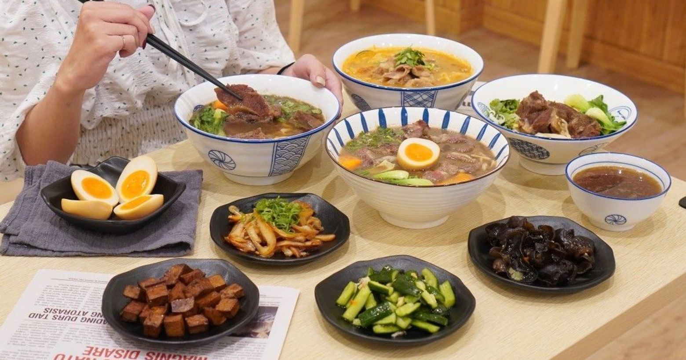

台南-東區
成功大學、臺南一中等20所各級學校及臺南市立文化中心與裕文、林森兩座圖書館，形塑出東區濃厚的人文氛圍；四通八達的道路網與縱貫鐵路、國道一號通過所帶來便捷的交通帶動了東區整體商業發展，吸引大量人口移入，使本區成為臺南市37區中人口密度最高的行政區。
---東區美食---
回首頁Walking su 藥膳麻油雞
台南美食超推薦「 Walking su 藥膳麻油雞」 天氣開始變的好冷啊~真的太適合來一碗暖呼呼麻油雞! 「 Walking su 藥膳麻油雞」搬新家後人氣一樣旺🔥 他們家的麻油吃起來不燥熱、變涼涼的天氣太適合。 晚上，宵夜想吃點暖呼呼的！那麼「 Walking su 藥膳麻油雞」一定要來嚐嚐。
台南市東區東平路260號
億哥牛肉湯
億哥牛肉湯位在台南市東區裕農路上,剛好是圓環的三角窗所以滿顯眼的,台南美食這麼多, 想要找24小時營業的台南牛肉湯的話, 就可以考慮一下億哥牛肉湯了 而且它們家除了牛肉湯外還有牛肉火鍋喔!!
地址：東區裕農路574號
kadoya喫茶
kadoya是屬日式洋菓子店， 全天候提供茶品及咖啡，甜點完售不補全店皆為環保蛋奶素製品，但部分商品含酒製作喔！ 有宗教考量就不建議了！
地址：台南市東區樹林街一段36號